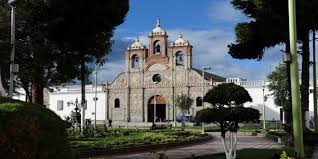
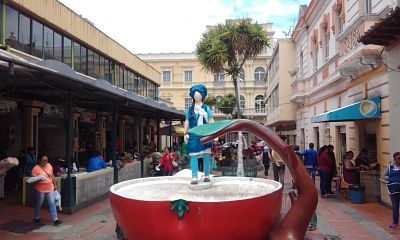
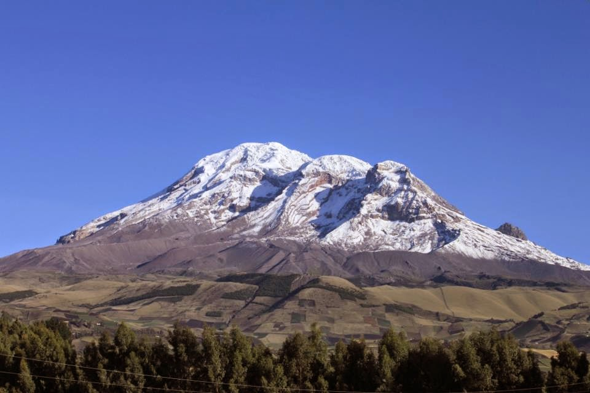
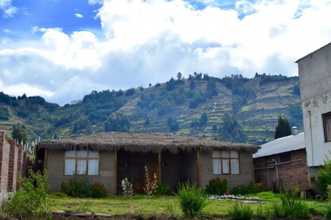

| HOME | GALERÍA | SITUACIÓN GEOGRÁFICA | COSTUMBRES | SITIOS TURÍSTICOS |
Riobamba es un destino turístico completo, donde se mezclan historia, naturaleza, cultura y tradiciones vivas. Cada uno de sus sitios turísticos representa una parte de su identidad: desde la catedral hasta las cumbres nevadas, desde los mercados hasta los senderos comunitarios.
La Catedral de Riobamba es uno de los monumentos religiosos y arquitectónicos más importantes de la ciudad. Se encuentra ubicada frente al Parque Maldonado, en pleno centro histórico, y es considerada un símbolo del renacimiento de la ciudad después del devastador terremoto de 1797.

El Mercado de La Merced es mucho más que un lugar para comprar alimentos: es un espacio vivo de cultura, sabor e identidad riobambeña. Allí se fusionan la tradición andina, la gastronomía ancestral y la actividad comercial, en un entorno patrimonial lleno de vida.

El volcán Chimborazo es uno de los símbolos naturales más importantes del Ecuador y de Sudamérica. Es un volcán inactivo ubicado en la cordillera occidental de los Andes ecuatorianos, en la provincia de Chimborazo, cerca de la ciudad de Riobamba.

Quilla Pacari (que significa “Luna del amanecer” en kichwa) es un proyecto de turismo comunitario ubicado en la comunidad San Francisco de Cunuguachay, parroquia Calpi, a unos 10–13 km (15–18 min en coche) de Riobamba, a altitud de 3 265 msnm

El Parque Maldonado, también conocido como la Plaza Mayor de Riobamba, es el corazón histórico y cultural de la ciudad. Ubicado frente a la Catedral de Riobamba, en el centro de la ciudad, este parque ha sido testigo de importantes eventos y transformaciones urbanas desde su creación.